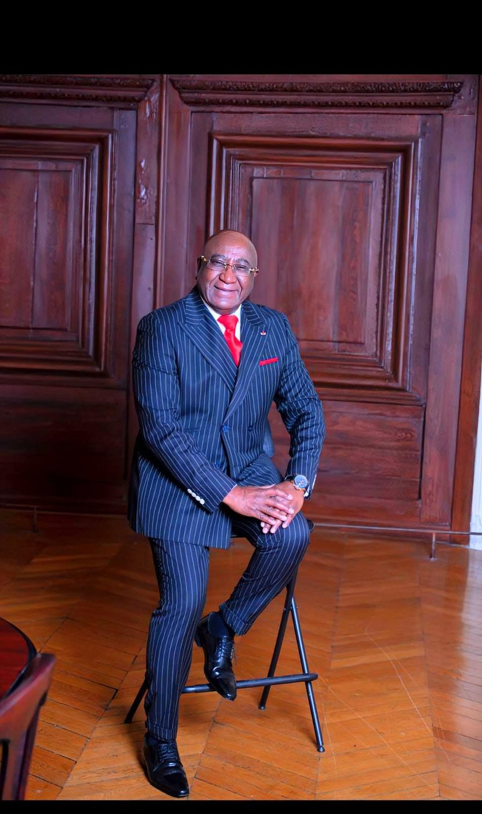

Président fondateur — CIDIGA
Chambre d'Initiatives pour le Développement des Investissements des Groupements en Afrique, dédiée aux études socio-économiques et politiques fiables.

Le fondateur
Conférencier de renom, spécialiste du continent africain. Chairman d'O.B.A. & B.O.I, fondateur de l'OPND et de la CEFMA — « Fédérer les expertises et les capitaux pour une Afrique qui se développe en bonne intelligence. »
Biographie
Conférencier de renom et spécialiste du continent africain, l'Ambassadeur Dr Cheick KEITA est titulaire d'une Maîtrise en Économie et d'un Doctorat en Sciences Économiques et Politiques & Relations Internationales. Originaire de Guinée Conakry, il grandit dans un environnement qu'il décrit lui-même comme « de pauvreté économique et de richesse sociale » — une expérience fondatrice qui nourrira toute sa vision de l'entrepreneuriat africain.
Il débute sa carrière comme Auditeur Grands Comptes au sein du pôle Audit du Crédit Agricole en France, avant de prendre la direction des Affaires Juridiques et du Contentieux de SOFIDEC. Il poursuit son parcours en Espagne, à la tête de la division Afrique du groupe multinational IMASA, puis comme Directeur des Marchés Afrique de la banque BBVA, troisième banque du pays.
Son expertise le conduit ensuite auprès de l'OCDE, puis comme haut fonctionnaire au Ministère de l'Économie et des Finances (DPMA) pendant 22 ans, au sein du pôle Inspection, Contrôle et Expertise de la Direction Générale des Impôts, à Paris Bercy. C'est fort de cette expérience institutionnelle, bancaire et juridique qu'il fonde en 1996 la CIDIGA, avant de donner naissance au réseau Open Business Africa.

Parcours professionnel
Pôle Audit, Gestion des affaires juridiques et financières.
Pilotage des affaires juridiques et du contentieux de l'entreprise.
Direction de la division Afrique de la multinationale espagnole (Oviedo).
Développement des marchés africains pour la troisième banque du pays.
Contribution aux travaux de l'Organisation de Coopération et de Développement Économiques.
22 ans de service — Pôle Inspection, Contrôle et Expertise (ICE), Direction Générale des Impôts, Paris Bercy.
Président fondateur de la Chambre d'Initiatives pour le Développement des Investissements des Groupements en Afrique.
Trente ans de relations construites entre l'Europe, la Méditerranée, l'Afrique et le Caucase.Ambassadeur Dr Cheick KEITA
Fonctions actuelles
Chambre d'Initiatives pour le Développement des Investissements des Groupements en Afrique, dédiée aux études socio-économiques et politiques fiables.
Promeut les investissements intra-africains selon le principe BSS : Business Sud-Sud, et les partenariats entre entreprises du Sud et du Nord.
Promeut les technologies numériques en Afrique et accompagne les start-up innovantes via un réseau de business angels et de fonds de capital-risque.
Observatoire Panafricain du Numérique pour le Développement, dédié à la transformation digitale du continent.
Ambassadeur honoraire de France auprès de la Commission Internationale des Droits de l'Homme pour le continent africain — bonne gouvernance et résolution des conflits.
En charge du développement du réseau de cette organisation internationale de promotion de l'expertise et des initiatives féminines.
World Business Angels Investment Forum, partenaire affilié du G20 Global Partnership for Financial Inclusion.
World Union of Small and Medium Enterprises — union mondiale des petites et moyennes entreprises.
Coalition pour l'Éradication des Faux Médicaments en Afrique — initiative récompensée par un prix du Sénat français.
Société du groupe HINDUJA, deuxième constructeur automobile de l'Inde.
Fonds d'investissement singapourien.
Organisation mondiale de conservation des forêts. Initiative « Une naissance, un arbre planté ; un décès, un arbre planté » — reboisement financé par la compensation carbone.
Organisation mondiale réunissant 100 dirigeants du monde entier autour d'une nouvelle gouvernance d'entreprise.
Premier réseau panafricain de business angels, engagé pour faciliter les investissements en Afrique.
Distinctions & engagements
Représentant de l'événement UNESCO célébrant la Guinée comme capitale mondiale du livre.
Décernés par HBO Talents of Africa puis à Abu Dhabi, saluant son action pour la promotion de l'investissement en Afrique.
Honoré par le Sénat pour son engagement en faveur de la promotion des investissements en Afrique et sa lutte pour l'éradication des faux médicaments sur le continent (CEFMA).
Panéliste régulier lors de conférences internationales sur l'Afrique et les pays ACP, auprès de l'OCDE, de l'UNESCO, du Ministère français de l'Économie et de la Banque mondiale.
Nommé auprès du deuxième constructeur automobile de l'Inde.
Fonds d'investissement singapourien. La même période le voit nommé vice-président de Forest Nature pour sa contribution au reboisement et à la conservation des forêts.
En charge des affaires internationales de cette école de commerce.
Prendre contact
Pour toute demande de partenariat, d'investissement ou de mise en relation, notre équipe vous répond rapidement.
Nous contacter →